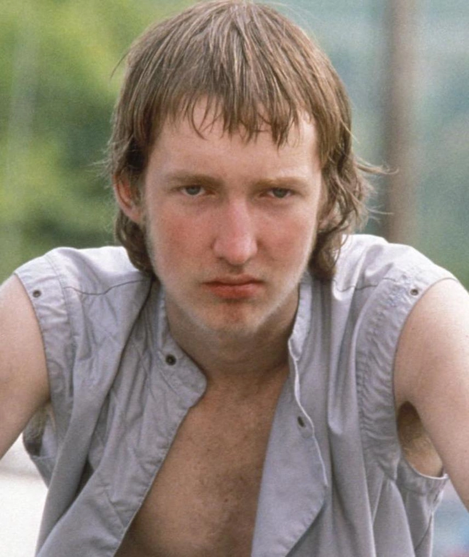
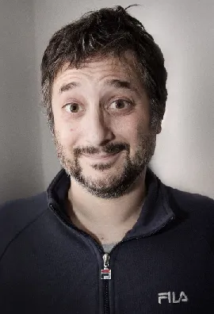
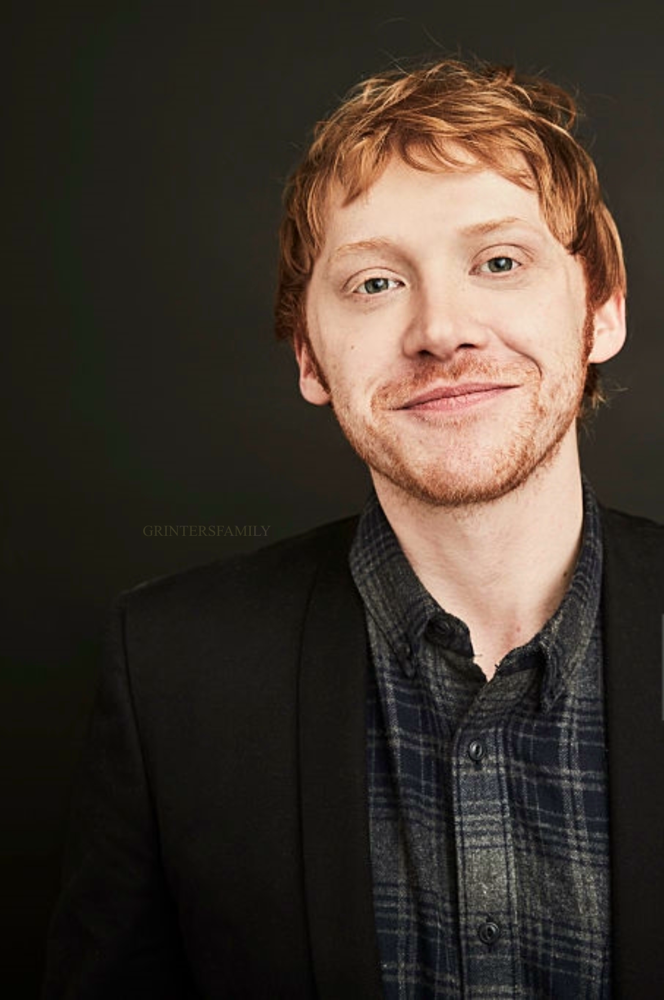
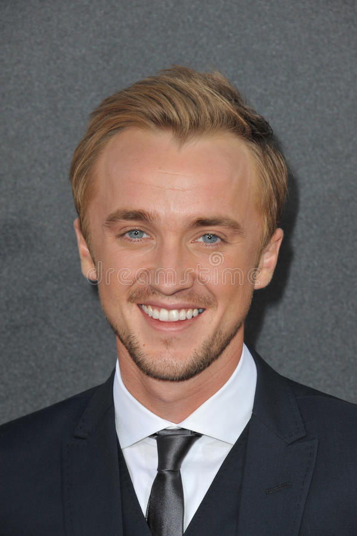

Teen friends Tummler (Nick Sutton) and Solomon (Jacob Reynolds) navigate the ruins of a tiny, tornado-ravaged town in Ohio that is populated by the deformed, disturbed and perverted. When not gunning down stray cats for a few bucks, the boys pass their time getting stoned on household inhalants.
played by Chloe Sevigny
played by Jacob Sewell
played by Nick Sutton
Harmony Korine
Harry Potter's (Daniel Radcliffe) third year at Hogwarts starts off badly when he learns deranged killer Sirius Black (Gary Oldman) has escaped from Azkaban prison and is bent on murdering the teenage wizard.
played by Daniel Radcliffe
played by Emma Watson
played by Rupert Grint
played by Tom Felton